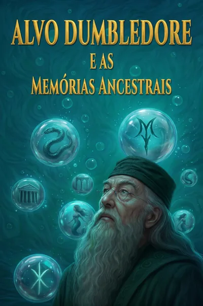

Em escrita
Alvo Dumbledore e as Memórias Ancestrais
Uma narrativa transformativa sobre memória, legado e as escolhas que atravessam gerações no mundo bruxo.
Histórias não oficiais, gratuitas e sem fins comerciais, publicadas com identificação clara de autoria e universo de origem.